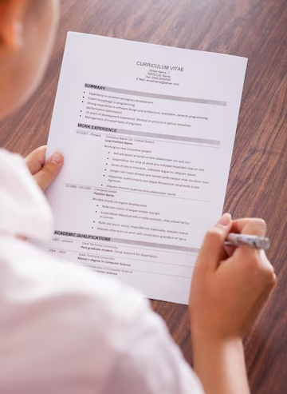

Administración de carrera: de los documentos a la acción
Curso de Administración de carrera: de los documentos a la acción
¿Como crear CV de alta calidad?

¿Por qué es importante tener un CV de calidad?
Un currículum vitae (CV) es más que un simple documento; es tu carta de presentación profesional y la primera impresión que tendrás ante un empleador. En un mercado laboral competitivo, donde cada oferta de trabajo recibe decenas o incluso cientos de solicitudes, tener un CV bien estructurado y atractivo puede marcar la diferencia entre ser seleccionado o pasar desapercibido.
Un CV de calidad comunica de manera clara y concisa quién eres, qué habilidades posees y cómo puedes aportar valor a una organización. Los empleadores suelen dedicar solo unos segundos a revisar cada currículum, por lo que es esencial captar su atención rápidamente. Un diseño limpio, una estructura lógica y un contenido relevante aseguran que tu perfil destaque y te acerque a una entrevista.
Además, un CV bien elaborado refleja profesionalismo y atención al detalle. Si un candidato presenta un documento desorganizado, con errores ortográficos o información irrelevante, puede transmitir la impresión de que no se toma en serio la oportunidad laboral. Por el contrario, un currículum bien diseñado demuestra que eres meticuloso, organizado y comprometido con tu carrera.
Un buen CV también es una herramienta para mostrar tus logros y diferenciarte de otros candidatos. No se trata solo de listar tus empleos anteriores, sino de destacar los resultados específicos que has alcanzado. Este enfoque orientado a logros permite que los empleadores visualicen el impacto que podrías tener en su empresa.
En resumen, un CV no es solo un requisito administrativo, sino una herramienta estratégica para avanzar en tu carrera profesional. Es tu oportunidad de causar una primera impresión memorable y de demostrar por qué eres el mejor candidato para el puesto. Invertir tiempo y esfuerzo en la creación de un currículum de calidad no es solo una tarea necesaria, sino una inversión en tu futuro profesional.¿Cómo los empleadores leen un CV: la mirada del HR en 10 segundos?
Un reclutador promedio dedica apenas 10 segundos a revisar un currículum en su primera lectura. Este breve vistazo inicial no busca conocer todos los detalles del candidato, sino identificar si cumple con los requisitos básicos para el puesto. Comprender cómo los empleadores leen un CV puede ayudarte a estructurar el tuyo de manera que destaque en este corto tiempo y aumente tus posibilidades de avanzar en el proceso de selección.
En esos primeros segundos, los reclutadores se enfocan en ciertos puntos clave. Lo primero que observan es el diseño y la claridad del documento. Un CV desordenado o con demasiada información puede ser descartado de inmediato. Por eso, es crucial que tu currículum sea visualmente atractivo, con secciones bien definidas y texto fácil de leer.
Después, el reclutador revisa el encabezado, donde se encuentran tus datos personales y de contacto. Aquí verifican tu nombre, correo electrónico y número de teléfono. También evalúan si has incluido un enlace a tu perfil profesional, como LinkedIn, o a un portafolio, si es relevante.
La siguiente área de enfoque es tu experiencia laboral. Los empleadores buscan títulos de puestos, nombres de empresas y fechas. En cuestión de segundos, intentan determinar si tienes el tipo y nivel de experiencia que el puesto requiere. Por esta razón, es esencial usar un lenguaje claro y destacar logros relevantes en cada posición. Palabras clave específicas del sector pueden ayudarte a captar su atención rápidamente.
El reclutador también echará un vistazo a tu sección de educación y habilidades. Si el puesto requiere una formación específica o un conjunto de competencias técnicas, estos elementos deben ser visibles de inmediato. Colocar tus habilidades más relevantes en un lugar destacado y usar listas concisas puede ser una estrategia efectiva.
Finalmente, aunque sea de forma indirecta, los reclutadores evalúan tu profesionalismo. Un CV con errores ortográficos, formato inconsistente o información irrelevante puede dar la impresión de que no estás realmente interesado o preparado para el puesto.
En resumen, en esos 10 segundos iniciales, el objetivo del reclutador no es analizar todos los detalles de tu carrera, sino decidir si vale la pena leer tu currículum con mayor profundidad. Diseñar un CV claro, bien estructurado y enfocado en lo relevante es fundamental para captar la atención de los empleadores y pasar al siguiente paso del proceso de selección.
Fundamentos de la estructura de un CV
Un currículum vitae (CV) es una herramienta esencial para presentarte ante posibles empleadores. La forma en que estructuras tu CV puede influir significativamente en la impresión que causas y, por lo tanto, en tus oportunidades de ser seleccionado. Es fundamental incluir los apartados correctos, presentar información relevante y evitar detalles innecesarios. A continuación, exploramos los componentes esenciales de un CV y qué incluir o no en cada sección.
1. Datos personales
Este apartado debe contener información básica y profesional que permita al empleador identificarte y contactarte fácilmente.
Qué incluir:- Nombre completo.
- Dirección de correo electrónico profesional (por ejemplo, juan.perez@example.com).
- Número de teléfono móvil.
- Ciudad de residencia.
- Enlaces a perfiles profesionales, como LinkedIn o un portafolio (si es relevante para el puesto).
- Detalles innecesarios como estado civil, edad, número de identificación o religión, a menos que lo requiera la oferta de trabajo.
- Correos electrónicos informales o poco profesionales.
- Fotografías, salvo que sean solicitadas en el país o sector en el que buscas empleo.
2. Experiencia laboral
Es la sección más importante de tu CV, ya que muestra tu trayectoria profesional y cómo has contribuido en trabajos anteriores.
Qué incluir:- Nombre de la empresa, puesto ocupado y período trabajado.
- Descripción breve de tus responsabilidades.
- Logros específicos con resultados cuantificables (por ejemplo, "aumenté las ventas en un 20%").
- Palabras clave relacionadas con el puesto al que aplicas.
- Listar todas tus experiencias laborales, especialmente si no son relevantes para el puesto actual.
- Usar descripciones vagas como “realizaba tareas asignadas” sin detallar tu impacto.
3. Educación
Este apartado es esencial para demostrar tu formación académica y cualquier capacitación adicional que sea relevante.
Qué incluir:- Nombre de la institución, título obtenido y años de estudio.
- Cursos, certificaciones o talleres relacionados con el puesto.
- Logros académicos destacados, como premios o becas.
- Incluir toda tu trayectoria educativa desde la primaria.
- Detallar estudios no finalizados o irrelevantes, a menos que sean específicos para el puesto.
4. Habilidades
Esta sección debe resaltar tus competencias más relevantes para el puesto al que aplicas.
Qué incluir:- Habilidades técnicas específicas: manejo de programas, idiomas, herramientas tecnológicas.
- Habilidades blandas que sean relevantes, como liderazgo, comunicación o gestión del tiempo.
- Nivel de dominio (por ejemplo, "Inglés: C1, avanzado").
- Habilidades obvias o genéricas, como “conocimientos básicos de Word”.
- Competencias irrelevantes para el puesto.
Consejos generales
Un CV efectivo debe ser claro, conciso y orientado al puesto. Cada sección debe aportar valor y estar adaptada a los requisitos de la oferta de empleo. Evita información redundante o innecesaria, y revisa el documento cuidadosamente para asegurarte de que no contenga errores ortográficos o gramaticales.
Formato y diseño de un CV
El formato y el diseño de un currículum vitae (CV) son factores clave para causar una buena impresión en los reclutadores. Un diseño limpio y profesional puede destacar tus habilidades y experiencia, mientras que un formato desorganizado puede hacer que tu CV sea descartado rápidamente. A continuación, exploramos aspectos esenciales como la selección de fuentes, colores, estilos y el uso de plantillas, además de consejos específicos para adaptar el diseño a diferentes industrias.
Laconismo y elección de estilo
La simplicidad es clave en el diseño de un CV. Un documento visualmente recargado puede ser difícil de leer y desviar la atención de tu experiencia y habilidades.
Aspectos clave a considerar:- Fuentes: Usa fuentes profesionales y fáciles de leer como Arial, Calibri o Times New Roman. Evita fuentes decorativas o poco formales.
- Tamaño de letra: El cuerpo del texto debe ser de 10 a 12 puntos, y los encabezados ligeramente más grandes (14-16 puntos).
- Colores: Opta por una paleta de colores neutra. Usa negro para el texto principal y un color suave (como azul o gris) para resaltar secciones clave.
- Estilos: Usa negritas para destacar encabezados o información importante, pero evita abusar de subrayados o cursivas.
Uso de plantillas prediseñadas
Si no tienes experiencia en diseño, las plantillas prediseñadas pueden ser una excelente herramienta para crear un CV profesional en poco tiempo.
Plataformas recomendadas:- Google Docs: Ofrece plantillas gratuitas que son fáciles de personalizar y compartir.
- Canva: Ideal para diseños más visuales y creativos, especialmente para industrias como diseño gráfico o marketing.
- Microsoft Word: Una opción clásica con plantillas básicas y funcionales.
Asegúrate de personalizar cualquier plantilla que utilices para que se adapte a tus necesidades y al puesto al que estás aplicando.
Consejos para diferentes industrias
El diseño de tu CV debe reflejar las expectativas de la industria en la que deseas trabajar. Aquí tienes algunos consejos específicos:
- Industrias técnicas: Prioriza la claridad y la organización. Usa un formato cronológico inverso para destacar tu experiencia reciente. Incluye secciones para habilidades técnicas y certificaciones.
- Industrias creativas: Añade elementos visuales como gráficos o colores, pero sin comprometer la legibilidad. Muestra tu portafolio o proyectos destacados en enlaces o códigos QR.
- Sector académico: Usa un formato más tradicional y detallado. Incluye publicaciones, conferencias y proyectos de investigación relevantes.
Conclusión
Un formato y diseño adecuados pueden marcar la diferencia en cómo los reclutadores perciben tu CV. Invierte tiempo en crear un diseño limpio y profesional, adaptado a las exigencias de tu industria y al tipo de puesto que deseas. Recuerda que la presentación también comunica tu nivel de atención al detalle y tu profesionalismo.
Contenido del CV
El contenido de un currículum vitae (CV) es crucial para superar la etapa de selección. La forma en que describes tu experiencia laboral, habilidades y logros determina si tu CV captará la atención del reclutador. A continuación, exploramos cómo estructurar el contenido de manera efectiva, utilizando descripciones sólidas, verbos de acción, resultados medibles y un equilibrio entre habilidades técnicas (hard skills) y habilidades interpersonales (soft skills).
Cómo describir la experiencia laboral
La descripción de tu experiencia laboral es la parte más importante del CV, ya que refleja tus logros profesionales y tu impacto en empleos anteriores. Sin embargo, no todas las descripciones son igualmente efectivas.
Ejemplos:- Descripción débil: "Operaba maquinaria pesada en proyectos de construcción."
- Descripción sólida: "Manejé maquinaria pesada de manera eficiente, completando proyectos de construcción con un 20% menos de tiempo estimado y garantizando estándares de seguridad."
- Descripción débil: "Trabajaba con documentación técnica."
- Descripción sólida: "Redacté y analicé documentación técnica detallada, reduciendo errores en los procedimientos operativos en un 15%."
Evita generalidades y enfócate en destacar los resultados tangibles de tu trabajo.
Uso de verbos de acción y resultados medibles
Los verbos de acción aportan dinamismo a las descripciones y demuestran tu papel activo en el logro de éxitos. Además, respaldar tus afirmaciones con resultados medibles aumenta la credibilidad de tu CV.
Ejemplos de verbos de acción:- Implementé
- Optimicé
- Supervisé
- Coordiné
- Reducí
- Desarrollé
Combina los verbos de acción con resultados específicos. Por ejemplo:
- "Optimicé los procedimientos de mantenimiento de maquinaria pesada, reduciendo el tiempo de inactividad en un 25%."
- "Supervisé un equipo de 10 operarios, garantizando la entrega de proyectos técnicos dentro de los plazos establecidos."
Mención de habilidades técnicas (hard skills) y habilidades interpersonales (soft skills)
Un CV exitoso debe incluir tanto habilidades técnicas como habilidades interpersonales. El equilibrio entre estos dos tipos de competencias hace que tu CV sea más atractivo para los empleadores.
Habilidades técnicas (hard skills):- Manejo de maquinaria pesada, como excavadoras y grúas.
- Interpretación y redacción de documentación técnica.
- Conocimientos avanzados de software CAD (AutoCAD, SolidWorks).
- Comunicación efectiva en equipos multidisciplinarios.
- Resolución de problemas en situaciones críticas.
- Gestión del tiempo y priorización de tareas.
Es importante que cada habilidad mencionada sea relevante para el puesto al que aspiras y esté respaldada por ejemplos prácticos. Por ejemplo, si mencionas "resolución de problemas", incluye una situación en la que tu habilidad contribuyó al éxito de un proyecto.
Conclusión
El contenido del CV no debe limitarse a una lista de responsabilidades, sino que debe mostrar tus logros y el valor que puedes aportar a la empresa. Utiliza descripciones claras y dinámicas, destaca los resultados con cifras y enfócate en habilidades relevantes para el puesto. Este enfoque aumentará significativamente tus posibilidades de éxito.
Problemas comunes al crear un CV
Crear un CV puede ser un desafío, especialmente si te enfrentas a situaciones como la falta de experiencia laboral, periodos de inactividad en tu historial profesional o la decisión de cambiar de carrera. A continuación, exploramos cómo abordar cada una de estas situaciones de manera efectiva.
¿Qué hacer si no tienes experiencia laboral?
No tener experiencia laboral no significa que tu CV no pueda destacar. Enfócate en tus estudios, habilidades y actividades extracurriculares que reflejen tus capacidades. Algunas estrategias incluyen:
- Destaca tu formación: Incluye detalles específicos sobre tus estudios, como proyectos destacados, premios o certificaciones.
- Menciona prácticas o voluntariado: Aunque no sean empleos formales, estas experiencias demuestran tus habilidades y compromiso.
- Enfatiza habilidades transferibles: Habilidades como el trabajo en equipo, la comunicación y la gestión del tiempo son valiosas, incluso sin experiencia laboral formal.
Por ejemplo: "Colaboré en la organización de un evento universitario, gestionando un equipo de 10 personas y asegurando el cumplimiento del cronograma."
¿Cómo explicar "vacíos" en la trayectoria laboral?
Los periodos de inactividad en tu historial laboral son comunes, pero es importante explicarlos de manera proactiva y positiva. Algunas estrategias incluyen:
- Capacitación durante los periodos de inactividad: Si aprovechaste el tiempo para estudiar, obtener certificaciones o desarrollar nuevas habilidades, menciónalo.
- Trabajo independiente: Proyectos freelance o emprendimientos personales también cuentan como experiencia.
- Razones personales: Si la pausa fue por motivos personales (como cuidar a un familiar), indícalo de manera breve y profesional.
Por ejemplo: "Durante este periodo, completé un curso avanzado en diseño gráfico que me permitió mejorar mis habilidades técnicas y creativas."
¿Cómo crear un CV al cambiar de profesión?
Cambiar de carrera puede parecer complicado, pero un CV bien estructurado puede ayudarte a destacar tus habilidades transferibles y mostrar tu potencial en la nueva área. Aquí tienes algunos consejos:
- Enfócate en habilidades relevantes: Identifica las competencias que pueden aplicarse a tu nueva profesión y destácalas.
- Incluye formación adicional: Cursos, certificaciones o talleres relacionados con tu nuevo campo son esenciales para demostrar tu compromiso.
- Adapta tu experiencia anterior: Aunque tu experiencia previa sea en otro sector, resalta logros y responsabilidades que puedan ser útiles en el nuevo rol.
Por ejemplo: "Aunque mi experiencia anterior es en ventas, mis habilidades de negociación y atención al cliente son perfectamente aplicables a un rol en gestión de proyectos."
Conclusión
Abordar los problemas comunes al redactar un CV requiere honestidad, enfoque y un poco de creatividad. Ya sea que te enfrentes a la falta de experiencia, periodos de inactividad o un cambio de carrera, la clave está en presentar tu historia profesional de manera positiva y orientada a los resultados. Con las estrategias correctas, puedes convertir cualquier desafío en una oportunidad para destacar.
Tendencias y Personalización en el CV
En un mercado laboral competitivo, las tendencias modernas y la personalización del currículum son herramientas clave para destacar entre los candidatos. Desde el uso de videorresúmenes hasta la creación de una marca personal sólida, y la integración de LinkedIn como complemento del CV, estas estrategias pueden ayudarte a captar la atención de los reclutadores.
Videorresúmenes: ¿cuándo son apropiados?
Un videorresumen es una herramienta poderosa para mostrar tu personalidad, habilidades de comunicación y creatividad. Sin embargo, no siempre es adecuado para todos los sectores o puestos. Aquí tienes algunos consejos para decidir si un videorresumen es la opción correcta:
- Úsalo en sectores creativos: Si estás postulando a trabajos en diseño gráfico, publicidad, medios o roles que valoren la innovación, un videorresumen puede ser ideal.
- Destaca habilidades blandas: Para roles de ventas, servicio al cliente o liderazgo, el videorresumen puede ser una forma efectiva de mostrar empatía y habilidades interpersonales.
- Evítalo en sectores técnicos: En áreas como ingeniería o contabilidad, un CV tradicional suele ser más apropiado.
Asegúrate de que el video sea breve (1-2 minutos), profesional y con un mensaje claro. La calidad del audio y la iluminación también son fundamentales.
Branding personal a través del CV
Tu CV no solo es un documento profesional, sino también una herramienta para construir tu marca personal. Aquí tienes cómo lograrlo:
- Crea una narrativa coherente: Asegúrate de que tu experiencia, habilidades y logros reflejen una trayectoria profesional clara y consistente.
- Usa un diseño único pero profesional: Aunque es importante destacar, evita diseños demasiado cargados que puedan distraer de la información esencial.
- Incluye un perfil profesional: Agrega un párrafo introductorio que resuma quién eres, qué ofreces y qué te diferencia de otros candidatos.
- Refleja tus valores: Si tienes experiencia en proyectos sociales o en roles que refuercen tus principios, inclúyelos para mostrar autenticidad.
Recuerda que tu CV es una extensión de tu imagen profesional. Personalízalo según el tipo de empresa y rol al que aplicas, manteniendo siempre un tono profesional y atractivo.
Uso de LinkedIn como complemento al CV
LinkedIn se ha convertido en una herramienta indispensable en el proceso de búsqueda de empleo y construcción de redes profesionales. Aquí te explicamos cómo usar LinkedIn para complementar tu CV:
- Actualiza tu perfil: Asegúrate de que tu perfil de LinkedIn esté completo y actualizado, reflejando la misma información que tu CV, pero con más detalle.
- Incluye enlaces en tu CV: Agrega un enlace a tu perfil de LinkedIn en la sección de datos personales, para que los reclutadores puedan explorar más sobre ti.
- Publica contenido relevante: Comparte artículos, logros o reflexiones relacionadas con tu industria para mostrar tu interés y conocimiento.
- Pide recomendaciones: Solicita recomendaciones a colegas o supervisores para respaldar tus habilidades y logros.
LinkedIn también permite a los reclutadores conocerte más allá de tu CV, ofreciendo una visión más completa de tu personalidad y tu red profesional.
Conclusión
Las tendencias como los videorresúmenes, el branding personal y el uso estratégico de LinkedIn pueden ser herramientas poderosas para destacar en el mercado laboral. Sin embargo, es importante utilizarlas con criterio, adaptándolas a tu sector y objetivos profesionales. La personalización y el enfoque estratégico son claves para maximizar el impacto de tu CV.
Parte Práctica: Creación y Análisis de CV
La parte práctica de la creación de un CV es crucial para entender cómo estructurar y presentar la información de manera efectiva. Un análisis detallado de ejemplos de buenos y malos CV te permitirá identificar lo que funciona y lo que no. Además, la creación de tu propio CV con retroalimentación es fundamental para perfeccionar tus habilidades y aumentar tus posibilidades de éxito en la búsqueda de empleo.
Análisis de ejemplos de buenos y malos CV
Analizar ejemplos de CV puede ofrecerte una visión clara de lo que debes incluir y evitar al crear el tuyo. Aquí veremos ejemplos de un buen y mal CV para destacar las diferencias clave.
Ejemplo de buen CV
Un buen CV debe ser claro, conciso y fácil de leer. Los datos más relevantes deben estar bien organizados para que un reclutador pueda encontrar rápidamente la información que busca. Algunos de los aspectos que hacen que un CV sea efectivo incluyen:
- Diseño limpio y profesional: El uso de un diseño sencillo con márgenes adecuados, títulos claros y una estructura coherente facilita la lectura.
- Experiencia relevante destacada: Las experiencias laborales se presentan en orden cronológico, destacando logros y responsabilidades clave, con resultados cuantificables siempre que sea posible.
- Habilidades técnicas y blandas: Las habilidades se agrupan de forma que se resalten tanto las técnicas (por ejemplo, manejo de software) como las interpersonales (como trabajo en equipo o liderazgo).
- Resumen profesional: Un párrafo al inicio resume la experiencia y fortalezas del candidato, alineando sus capacidades con el puesto que se busca.
Ejemplo de mal CV
Un mal CV puede tener un diseño desordenado, información irrelevante o errores que dificultan la lectura y comprensión. Algunos ejemplos de lo que no debe incluir un CV son:
- Falta de estructura: Información mezclada, sin un formato claro o separación entre las distintas secciones (experiencia, educación, habilidades).
- Detalles innecesarios: Incluir información personal irrelevante, como edad, estado civil o una foto inapropiada.
- Falta de logros cuantificables: Descripciones vagas de tareas sin resultados medibles o ejemplos concretos que muestren cómo contribuiste a los objetivos de la empresa.
- Errores gramaticales y ortográficos: Los errores en un CV pueden dar una mala impresión al reclutador, haciendo que pierdas oportunidades.
Creación de tu propio CV con retroalimentación
La creación de un CV propio es un proceso que requiere reflexión y dedicación. A continuación, te damos algunas pautas para que puedas construir un CV que resalte tus habilidades y experiencias de manera efectiva:
- Elige un formato adecuado: Decide si prefieres un CV cronológico, funcional o mixto según tu experiencia y el tipo de trabajo al que estés postulando.
- Personaliza para cada puesto: Adapta tu CV a la oferta de trabajo a la que aplicas, destacando la experiencia y habilidades más relevantes para ese rol específico.
- Solicita retroalimentación: Es importante recibir comentarios sobre tu CV, ya sea de un colega, mentor o incluso un experto en recursos humanos. La retroalimentación externa te permitirá identificar áreas de mejora.
Conclusión
La creación de un CV es una habilidad que se perfecciona con la práctica y la retroalimentación. Analizar ejemplos de buenos y malos CV te ayudará a evitar errores comunes y a crear un documento que se destaque. Además, recibir retroalimentación sobre tu CV te permitirá mejorar continuamente y aumentar tus oportunidades de éxito en el mercado laboral.
Consejos y Bonificaciones: Carta de Presentación, Entrevistas y Solicitudes
Al presentar una solicitud de empleo, un CV bien elaborado es solo una parte del proceso. La carta de presentación, la preparación para la entrevista y una solicitud de trabajo bien estructurada son aspectos esenciales que pueden marcar la diferencia en tu búsqueda de empleo. A continuación, exploraremos algunos consejos prácticos para optimizar cada uno de estos elementos y aumentar tus posibilidades de éxito.
Consejos para una carta de presentación efectiva
La carta de presentación es tu oportunidad para destacar más allá de lo que está escrito en tu CV. Es una introducción personalizada que muestra tu interés en el puesto y cómo tus habilidades y experiencias encajan con lo que busca la empresa. Aquí algunos consejos clave:
- Hazla personalizada: Dirige la carta a la persona encargada de la contratación, si es posible. Menciona el nombre de la empresa y el puesto específico.
- Explica por qué eres adecuado para el puesto: Usa ejemplos concretos de tu experiencia laboral para mostrar cómo puedes aportar valor a la empresa.
- Mantén la brevedad y claridad: No hagas la carta demasiado larga. Un par de párrafos concisos que resuman por qué eres el candidato ideal son suficientes.
- Muestra tu entusiasmo: Transmite tu interés genuino por el puesto y por formar parte de la empresa, pero sin exagerar.
Preparación para la entrevista
La entrevista es tu oportunidad para demostrar tus habilidades de manera más personal. Prepararte adecuadamente puede marcar la diferencia. Aquí algunos consejos:
- Investiga sobre la empresa: Conoce su misión, visión, cultura y los productos o servicios que ofrece. Esto demostrará tu interés y preparación.
- Practica tus respuestas: Prepara respuestas para preguntas comunes, como "¿Cuáles son tus fortalezas y debilidades?" o "¿Por qué quieres trabajar aquí?". Usa ejemplos concretos que destaquen tus logros.
- Haz preguntas: Al final de la entrevista, muestra tu interés preguntando sobre el equipo, la cultura o los próximos pasos del proceso. Esto demuestra que estás comprometido.
- Cuida tu lenguaje corporal: La primera impresión cuenta, así que mantén una postura abierta y segura, haz contacto visual y sonríe.
Siguientes pasos después de la solicitud
Después de enviar tu CV y carta de presentación, no te olvides de seguir el proceso de solicitud de manera efectiva:
- Haz un seguimiento: Si no recibes respuesta después de unos días, realiza un seguimiento con un correo electrónico corto y profesional para mostrar tu interés continuo.
- Prepárate para lo inesperado: A veces, las entrevistas pueden ser muy técnicas o inesperadas. Mantén una actitud flexible y abierta ante cualquier tipo de pregunta o situación.
- Continúa buscando oportunidades: No te detengas en una sola solicitud. Sigue aplicando a otros puestos mientras esperas una respuesta.
Conclusión
En resumen, una carta de presentación bien escrita, una preparación adecuada para las entrevistas y un seguimiento profesional después de la solicitud son aspectos fundamentales para maximizar tus oportunidades en la búsqueda de empleo. Estos elementos complementan tu CV y ayudan a crear una imagen completa de ti como candidato, aumentando tus posibilidades de éxito. Recuerda, cada paso es una oportunidad para impresionar y mostrar tu verdadero potencial.
Duración
Este curso tiene una duración equivalente de 1 hora académica.
- Mas detalles de Certificación de Curso aqui